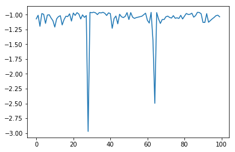

複数候補を一度に探索する¶
1回の探索ステップで、2つ以上の候補を一度に評価する場合のチュートリアルです。
探索候補データの準備¶
[1]:
import physbo
import os
import urllib
import ssl
import numpy as np
import matplotlib.pyplot as plt
%matplotlib inline
ssl._create_default_https_context = ssl._create_unverified_context
def load_data():
A = np.asarray(np.loadtxt('data/s5-210.csv',skiprows=1, delimiter=',') )
X = A[:,0:3]
t = -A[:,3]
return X, t
X, t = load_data()
X = physbo.misc.centering(X)
simulator の定義¶
後述の
num_search_each_probe を2以上にした場合、action には action ID の array が入力されます。各 action ID に対応した評価値のリストを返すように定義してください。
基本チュートリアルと simulator の定義は同じですが、 t は numpy.array であり、action に array が入力されると self.t[action] も array になる点に留意してください。
[2]:
class simulator:
def __init__( self ):
_, self.t = load_data()
def __call__( self, action ):
return self.t[action]
simulator の実行例
[3]:
sim = simulator()
sim([1,12,123])
[3]:
array([-1.01487066, -1.22884748, -1.05572838])
最適化の実行¶
[4]:
# policy のセット
policy = physbo.search.discrete.policy(test_X=X)
# シード値のセット
policy.set_seed( 0 )
num_search_each_probe によって、各探索ステップにおいて評価する候補数を指定することができます。
下記の実行例だと、ランダムサーチにより 2 ×10 = 20回、ベイズ最適化により 8 ×10 = 80回 simulator を評価することになります。
引数
max_num_probes: 探索ステップ数num_search_each_probe: 各探索ステップにおいて評価する候補数
[ ]:
res = policy.random_search(max_num_probes=2, num_search_each_probe=10, simulator=simulator())
res = policy.bayes_search(max_num_probes=8, num_search_each_probe=10, simulator=simulator(), score='EI',
interval=2, num_rand_basis=100)
結果の確認¶
[6]:
plt.plot(res.fx[0:res.total_num_search])
[6]:
[<matplotlib.lines.Line2D at 0x1a0f89f590>]

[7]:
best_fx, best_action = res.export_all_sequence_best_fx()
plt.plot(best_fx)
[7]:
[<matplotlib.lines.Line2D at 0x1a0fb16150>]

res.export_sequence_best_fx() により、各ステップまでに得られたベスト値とその action の履歴 を得られます。
res.export_all_sequence_best_fx() との違いは、simulator の評価毎ではなく、探索ステップ毎の情報になるという点です。(今回の場合は合計ステップ数は 10, 評価数は 100 です）
[8]:
best_fx, best_action = res.export_sequence_best_fx()
plt.plot(best_fx)
[8]:
[<matplotlib.lines.Line2D at 0x1a0f88ec50>]